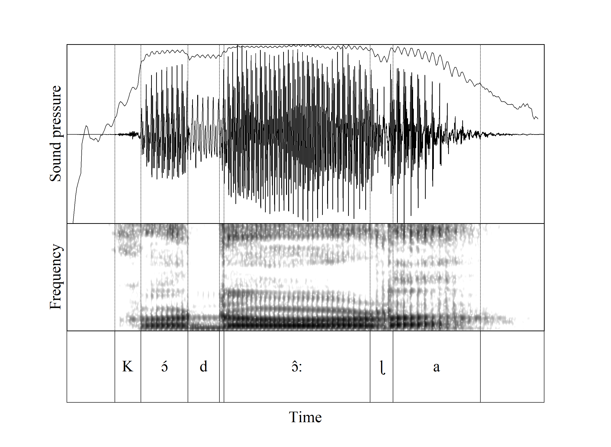
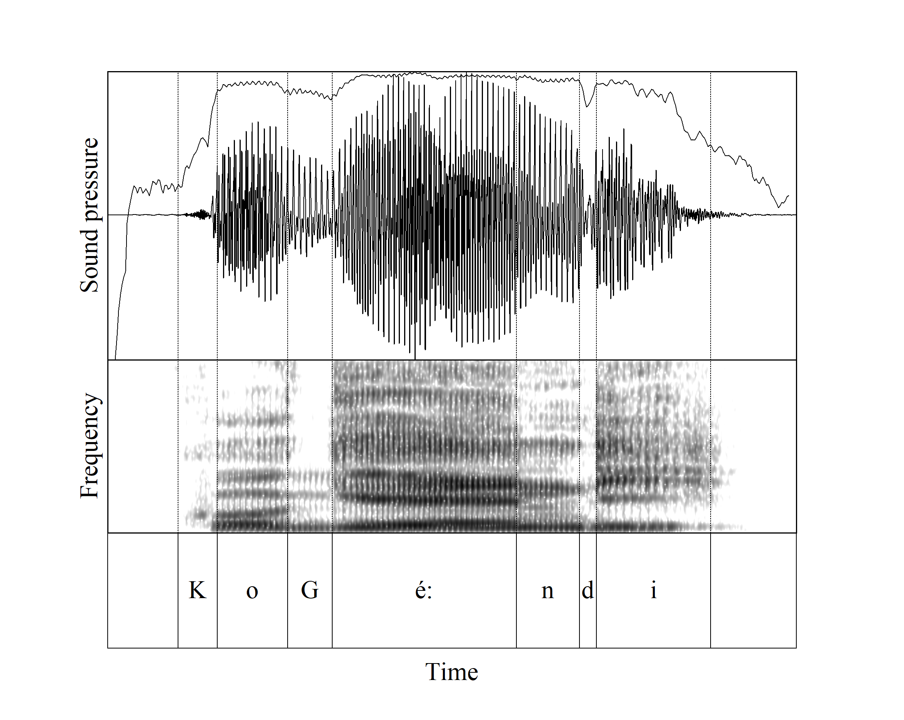
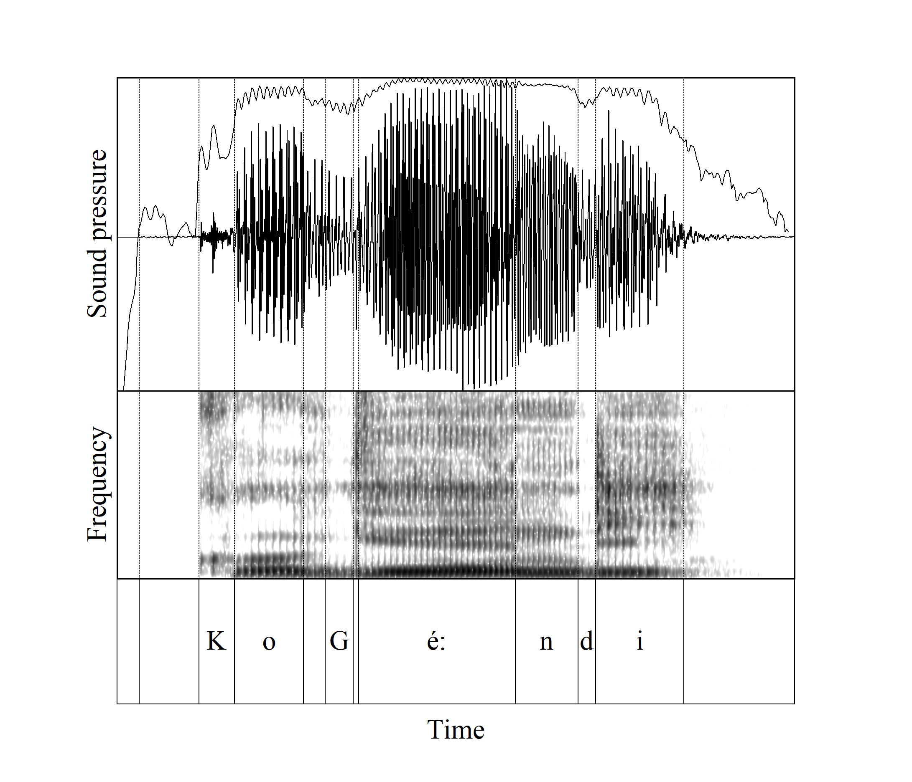
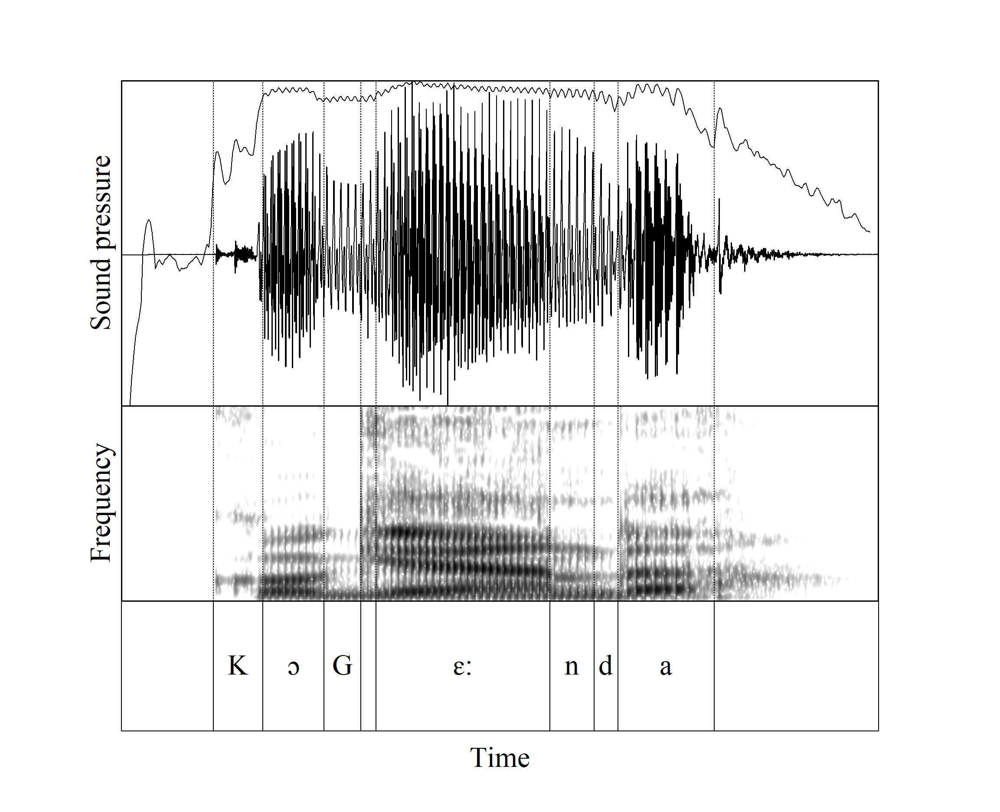
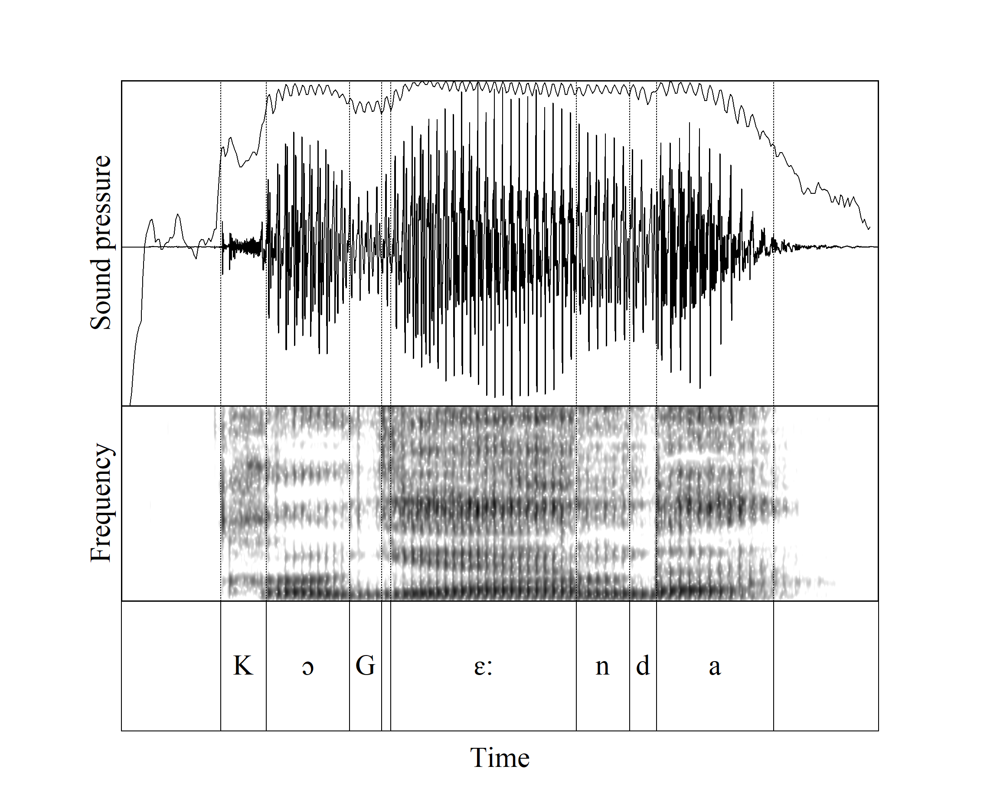
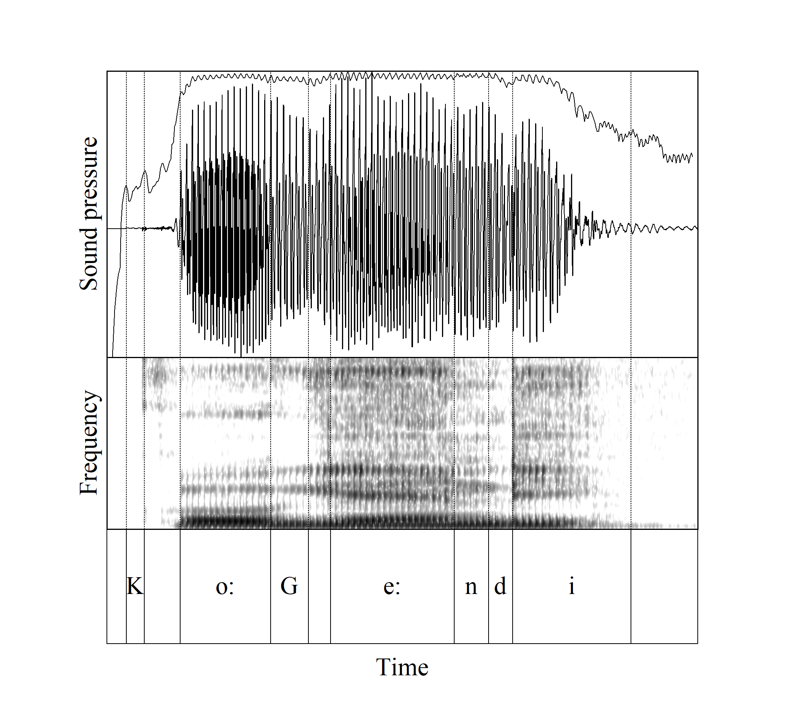

Goal: Making the transition from visible acoustics to segmental analysis, tabula rasa w.r.t. (the) language, but with implicit knowledge of how humans can get from sounds to face stuff. Most specifically, "to make this acoustic interval, you need that degree of constriction over there (plus something about time)".
Capital letters refer to the constrictions in question. The focus is "G", secondarily "K". Intervals are suggestive of segments, unlabeled ones are points of interest ("how do we deal with this?"). I mostly avoid nanosegmentation but kuzina was too special to pass up. For initial "K", "t" the symbol is in the first interval with detectable acoustic activity – which may not show up on this screen, usually a bit of waveform activity. Spelling is in the second column. Spectrograms to 10K. Amplitude (somewhat redundant indicator of constriction) is at 300Hz, 2.5 msc step. Commentary is about the preceding pictures.The conclusion(s). Velar (obstruents) are implemented with a loose constriction and tolerate substantial variation in constriction, perhaps 4 on a 6-point scale, ±1.5. Evidence for constriction is release-biased (amplitude decreases during closure because of pressure build-up which is slow, we cannot directly see how constricted the left edge is). Coronal obstruents (mostly off-topic) have a tighter constriction target and less variation. Affricated release is kind of a feature of k, t.
| Start-up stop / fricative tutorial | |||
| takwa | pay-nimp | | |
| Closure of initial voiceless stop (t) is usually invisible save for inhalation and spit. We see release burst as built-up pressure is quickly released. Shows up as spike and zigzag in the waveform and higher frequency dark stuff in the spectrogram. Please suppress curiosity about K. | |||
| kutala | pass rumors-inf | | |
| With medial t, waveform amplitude of vowel decreases a bit before t, there is even a tiny reverse release burst at the end of the vowel (spit?). Vowel amplitude drops precipitously into closure, voicing "leaks" into the first half of the closure, then a bigger release burst (magnitude-higher, longer) after closure. | |||
| dola | pick-imp | | |
| Very low amplitude in waveform during initial d, little energy above fundamental during initial voiced closure. Suddenly, a (short, small) release burst 8 msc before obvious vowel as the vocal tract first opens, since pressure has not built up much. | |||
| kodola | pick-inf |  | |
| Lots of air precedes intervocalic d, which gets quickly shut off by the tongue valve. Waveform amplitude starts to drop in ɔ́ 1 cycle before closure. During closure, amplitude drops substantially but there is still (significantly damped) energy up to 4K. Then there is a release burst, demonstrating sufficient constriction. | |||
| sosa | rest-imp | | |
| Illustrating partial constriction with initial s, amplitude ramps up slowly and reaches a respectable level because of substantial airflow. After the fricative noise period, glottal pulses re-assert themselves in the spectrogram at the lowest frequencies with higher-frequency noise; within 32 msc the pulses are fully visible. Amplitude of noise is much higher intervocalically (increased air flow between vowels). No burst since negligible pressure build up since no closure. | |||
| kuzina | pinch-inf | | |
| Higher-frequency noise becomes visible at the right edge of ʊ around the unlabeled interval, then there is a buzzy vowel with glottal pulses but a hole in the spectrogram between 2500 and 4000. The hole goes away as do the high frequency indicators of glottal pulses when it starts to sound like an ɪ-colored z. Waveform amplitude starts to fall at the right edge of ʊ, there is a brief bump up as the constriction narrows at the start of ɨ(z) then falls until the z(ɪ) portion. The take-away is that amplitude changes are smaller and slower. | |||
| Now about K. Initial K usually it looks like very light fricative noise before the vowel (Kɔ́dɔ̂ɭa). Still, there are often release bursts. Intervocalic K has a period of decreasing amplitude like a less-damped version of the closure of t, which looks fairly voiced throughout (suggesting that there isn't a very strong and rapid closure). In intervocalic taKwa there is a double tap release and reasonably convincing high frequency noise. K is "less constricted". At the bottom, we can compare K and the phonemes /x, k/ of Tiriki, coming from the same guy's mouth (he is bilingual). | |||
| Application to velars | |||
| kugini | slander-1p past | | |
| Waveform amplitude drops at left edge of G, somewhat slowly. Strong across the board amplitude-damping above 3000. Release burst at right edge of G and rapid increase in amplitude. | |||
| kogenya | wonder-inf | | |
| Slow and small decrease then increase in waveform amplitude into and during G. Little effect on spectrogram amplitude. Perceptual boundary between ɔ and G or G and ɛ very hard to discern. No release burst. This and preceding sound different. There is only (some) constriction, not closure. | |||
| kugika | exaggerate-inf | | |
| This example is like kugini, rapid change in amplitude and fairly substantial change. However, not as damped in high frequencies compared to kugini. Release burst not as strong, more spread out over time. Less strongly constricted compared to kugini. | |||
| kovega | shave-inf | | |
| G is similar to what we see in intervocalic kogenya, but with midpoint reduction in amplitude being greater, and certainly not rapid. No burst: still not closed, but more constricted. | |||
| Now examples with more-intermediate degrees of constriction, where the stop / fricative distinction is more tenuous. | |||
| kugimbi | make rain-1p past | | |
| kuguta | stack-inf | | |
| kuguta | win-inf | | |
| kuguti | stack-1p past | | |
| kogonya | persuade-inf | | |
| And now the root Geend in various tokens: substantial variation in the stop / fricative properties within the same linguistic unit (lexical root). | |||
| kogendi | walk-1p past | | |
| kogendi | walk-1p past |  | |
| kogendi | walk-1p past |  | |
| kogenda | walk-inf |  | |
| kogenda | walk-inf |  | |
| kogendi | walk-1p pfcom |  | |
| (koogeendi) | |||
| Inter-lingual comparison of Logoori K, and the two Tiriki phonemes k, x | |||
| lʊKa[L] | vomit-imp | ||
| luka[T] | make ugali-imp | ||
| luxa[T] | vomit-imp | ||
| Unclear whether Logoori K and Tiriki k are the same. No /b,d,g/ in Tiriki. |